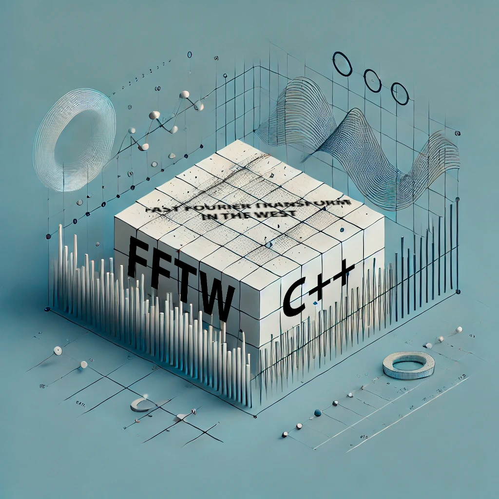

Unraveling FFTW: The Fastest Fourier Transform in the West
Explore the implementation and importance of FFTW in C++ for Fast Fourier Transform computations. With its adaptability and hardware-optimized architecture, FFTW not only reduces computation time but also enables detailed frequency analysis in fields such as engineering and physics. From preprocessing to executing multidimensional transforms, FFTW remains the standout choice in high computational demand environments. Read the full article at this link.